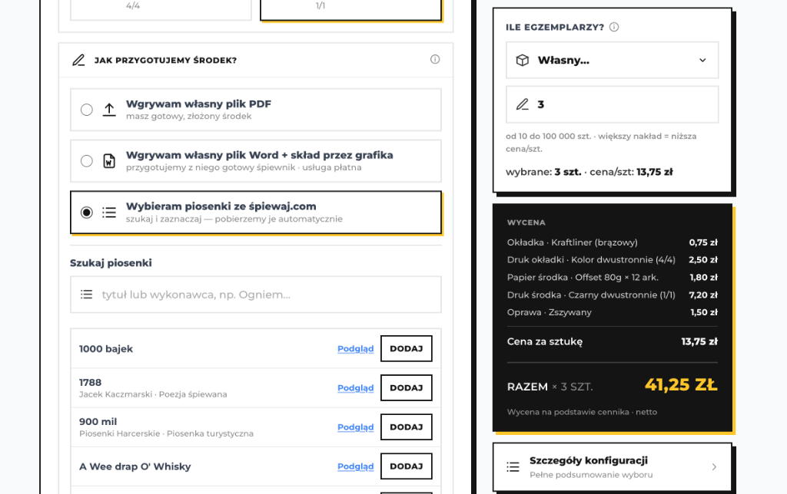

Wydrukuj własny śpiewnik z Podrukowane i spiewaj.com
Planujesz obóz harcerski, rajd turystyczny, biwak drużyny, festiwal piosenki czy po prostu wspólne śpiewogrania przy ognisku?
Dzięki współpracy serwisu spiewaj.com z harcerską drukarnią Podrukowane (działającą przy Chorągwi Stołecznej ZHP),
możesz w łatwy sposób skomponować i zamówić profesjonalnie wydrukowane śpiewniki z piosenkami z naszej bazy!

Wybór utworów z bazy spiewaj.com bezpośrednio w kreatorze druku śpiewnika
Jak zamówić wydrukowany śpiewnik? Krok po kroku
-
Otwórz kreator śpiewnika:
Wejdź na stronę https://podrukowane.stoleczna.zhp.pl/zaprojektuj-spiewnik/.
-
Wybierz źródło piosenek:
W sekcji „Jak przygotujemy środek?” zaznacz opcję:
„Wybieram piosenki ze śpiewaj.com (szukaj i zaznaczaj — pobierzemy je automatycznie)”.
-
Wyszukaj i dodaj ulubione utwory:
Skorzystaj z wyszukiwarki, wpisując tytuł utworu lub wykonawcę. Możesz podejrzeć treść piosenki przyciskiem [Podgląd], a następnie dodać ją do swojego śpiewnika jednym kliknięciem [DODAJ].
-
Dostosuj parametry druku:
Wybierz nakład (od pojedynczych egzemplarzy po setki sztuk), format, typ papieru (np. klasyczny offset 80g), rodzaj okładki (np. ekologiczny Kraftliner) oraz rodzaj oprawy.
-
Natychmiastowa wycena i zamówienie:
Kreator w czasie rzeczywistym podaje dokładną cenę za sztukę oraz łączny koszt. Złóż zamówienie, a gotowe śpiewniki zostaną wydrukowane, zszyte i wysłane prosto do Ciebie.
Dlaczego warto skorzystać?
library_music Zawsze sprawdzona baza
Korzystasz ze stale rozwijanej i weryfikowanej przez społeczność bazy tekstów i chwytów gitarowych spiewaj.com.
auto_stories Gotowy, estetyczny skład
Nie musisz ręcznie formatować Worda ani ustawiać marginesów – kreator dba o czytelny układ piosenek i akordów.
groups Dowolny nakład
Zamów 3 sztuki dla swojej szóstki wędrowniczej albo 100 sztuk na ogólnopolski zlot hufca – elastyczność bez minimalnych limitów.
volunteer_activism Harcerska inicjatywa
Drukarnia Podrukowane prowadzona jest przez Chorągiew Stołeczną ZHP – zamawiając tutaj, wspierasz harcerskie działania programowe.